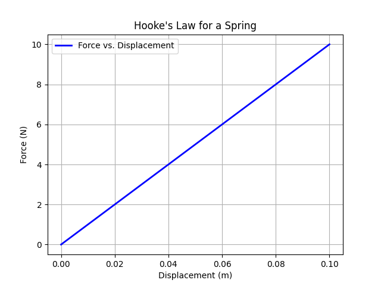
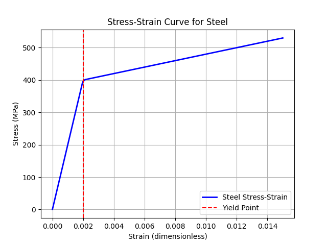
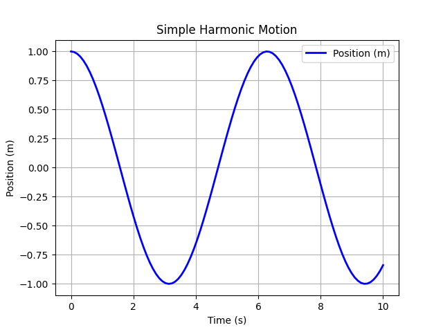
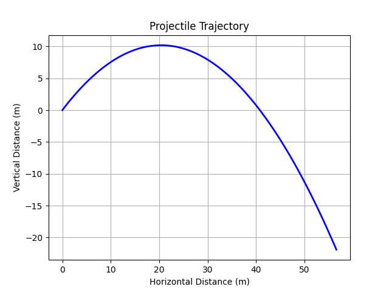

4 Python for Applied Mechanics
This tutorial extends the foundational and advanced Python concepts from previous tutorials, tailoring them to applied mechanics in engineering. It focuses on using NumPy for numerical computations involving vectors and matrices (e.g., forces, stresses), Matplotlib for visualizing mechanics data (e.g., stress-strain curves, motion plots), and integrates these with Pint for unit-aware calculations. Examples are drawn from statics, dynamics, and mechanics of materials. Assume Pint, NumPy, and Matplotlib are installed in your virtual environment (as covered in the advanced tutorial).
4.1 Requirements
Build on the advanced tutorial: Activate your virtual environment and ensure the following libraries are installed via pip install numpy matplotlib scipy pint. SciPy is included for numerical methods like solving differential equations.
4.2 NumPy for Vectors and Matrices
NumPy is essential for handling arrays and matrices in applied mechanics, such as representing force vectors, displacement arrays, or stiffness matrices.
4.2.1 Vector Operations
Vectors are used for forces, velocities, and moments. NumPy arrays enable efficient operations like addition (resultant forces) and dot/cross products (work or torque).
These operations are crucial in statics for equilibrium analysis or in dynamics for momentum calculations.
# Vector Operations using NumPy
import numpy as np
# Define two force vectors in 3D space (units: Newtons)
force1 = np.array([10, 20, 0]) # Force vector 1 along x and y directions
force2 = np.array([5, -10, 15]) # Force vector 2 along x, y, and z directions
# 1. Resultant Force
# Vector addition gives the combined effect of both forces
resultant = force1 + force2
print("Resultant Force:", resultant)
# Output: [15 10 15]
# 2. Dot Product
# Measures how much one vector acts in the direction of another
# Often interpreted as work done if one vector is force and the other is displacement
work = np.dot(force1, force2)
print("Dot Product (Work):", work)
# Output: -150
# 3. Cross Product
# Produces a vector perpendicular to both input vectors
# Often used to calculate torque (moment) vector
torque = np.cross(force1, force2)
print("Cross Product (Torque):", torque)
# Output: [ 300 -150 -200]Output:
Resultant Force: [15 10 15]
Dot Product (Work): -150
Cross Product (Torque): [ 300 -150 -200]4.3 Matplotlib for Visualizing Mechanics Data
Matplotlib allows plotting of mechanics results, such as stress-strain curves in materials testing or position-time graphs in kinematics.
4.3.1 Basic Plotting
Plot force vs. displacement for a linear spring (Hooke’s law: F = kx).
# Plotting Force vs. Displacement for a Linear Spring (Hooke's Law)
import numpy as np
import matplotlib.pyplot as plt
# 1. Define displacement array (from 0 to 0.1 meters)
x = np.linspace(0, 0.1, 50) # 50 points for smooth curve
# 2. Define spring constant
k = 100 # Spring stiffness in N/m
# 3. Calculate force using Hooke's Law: F = k * x
F = k * x # Force in Newtons corresponding to each displacement
# 4. Plotting
plt.plot(x, F, label='Force vs. Displacement', color='blue', linewidth=2)
plt.xlabel('Displacement (m)') # x-axis label
plt.ylabel('Force (N)') # y-axis label
plt.title('Hooke\'s Law for a Spring') # Plot title
plt.legend() # Show legend
plt.grid(True) # Add grid lines for readability
# 5. Display the plot
plt.show()This generates a line plot showing a linear relationship, useful for visualizing elastic behavior.

4.3.2 Advanced Plot: Stress-Strain Curve
For mechanics of materials, plot a typical stress-strain curve for steel.
# Plot a typical stress-strain curve for steel (elastic + plastic behavior)
import numpy as np
import matplotlib.pyplot as plt
# 1. Define strain array (dimensionless)
# Small values since steel deforms elastically up to ~0.2% strain
strain = np.linspace(0, 0.015, 100) # 0 to 1.5% strain
# 2. Material properties
E = 200_000 # Young's modulus in MPa (elastic stiffness)
yield_strain = 0.002 # Approximate yield strain (0.2%)
yield_stress = E * yield_strain # Stress at yield (MPa)
# 3. Stress-strain relationship
# Linear elastic region: stress = E * strain
# Plastic region: stress increases at lower slope (simplified hardening)
stress = np.where(
strain <= yield_strain,
E * strain, # Elastic region
yield_stress + 10_000 * (strain - yield_strain) # Plastic region with hardening
)
# 4. Plotting the curve
plt.plot(strain, stress, color='blue', linewidth=2, label='Steel Stress-Strain')
plt.xlabel('Strain (dimensionless)')
plt.ylabel('Stress (MPa)')
plt.title('Stress-Strain Curve for Steel')
# Mark the yield point
plt.axvline(x=yield_strain, color='red', linestyle='--', label='Yield Point')
plt.legend()
plt.grid(True) # Show grid for better readability
plt.show()This plot illustrates elastic and plastic regions, with a dashed line at the yield point.

4.4 Numerical Methods with SciPy
SciPy provides tools for numerical integration and solving differential equations, key in dynamics for motion simulation.
4.4.1 Solving ODEs: Simple Harmonic Motion
Model a mass-spring system: d²x/dt² + ω²x = 0.
# Simple Harmonic Motion (SHM) Simulation using ODE Integration
import numpy as np
from scipy.integrate import odeint
import matplotlib.pyplot as plt
# 1. Define the differential equation for SHM
def shm(y, t, omega):
"""
y: [position, velocity]
Returns derivatives [dy/dt, dv/dt]
dv/dt = -omega^2 * position
"""
return [y[1], -omega**2 * y[0]]
# 2. Initial conditions
y0 = [1, 0] # Initial position = 1 m, initial velocity = 0 m/s
# 3. Time array for simulation
t = np.linspace(0, 10, 100) # 0 to 10 seconds, 100 points
# 4. Angular frequency
omega = 1 # rad/s
# 5. Solve the ODE
sol = odeint(shm, y0, t, args=(omega,))
# 6. Plot position vs. time
plt.plot(t, sol[:, 0], label='Position (m)', color='blue', linewidth=2)
plt.xlabel('Time (s)')
plt.ylabel('Position (m)')
plt.title('Simple Harmonic Motion')
plt.grid(True)
plt.legend()
plt.show()The plot shows a sinusoidal oscillation of position vs. time.

4.5 Integration Example: Projectile Motion
Combine NumPy, SciPy, and Matplotlib for a dynamics problem: Simulate projectile trajectory under gravity.
# Simulate projectile motion under gravity using ODE integration
import numpy as np
from scipy.integrate import odeint
import matplotlib.pyplot as plt
# 1. Define the ODE system for projectile motion
def projectile(y, t, g, theta, v0):
"""
y = [x, vx, y, vy]
Returns derivatives [dx/dt, dvx/dt, dy/dt, dvy/dt]
Assumes no air resistance, constant gravity.
"""
return [y[1], 0, y[3], -g] # dx/dt = vx, dvx/dt = 0, dy/dt = vy, dvy/dt = -g
# 2. Initial conditions
theta = np.radians(45) # Launch angle in radians
v0 = 20 # Initial speed in m/s
y0 = [0, v0 * np.cos(theta), 0, v0 * np.sin(theta)] # [x0, vx0, y0, vy0]
# 3. Time array for simulation
t = np.linspace(0, 4, 100) # 0 to 4 seconds
# 4. Gravity
g = 9.81 # m/s²
# 5. Solve the ODE
sol = odeint(projectile, y0, t, args=(g, theta, v0))
# 6. Plot trajectory (x vs. y)
plt.plot(sol[:, 0], sol[:, 2], color='blue', linewidth=2)
plt.xlabel('Horizontal Distance (m)')
plt.ylabel('Vertical Distance (m)')
plt.title('Projectile Trajectory')
plt.grid(True)
plt.show()This simulates and plots the parabolic path, ignoring air resistance.

4.6 Summary
This tutorial applies Python tools to applied mechanics, using NumPy for computations, Matplotlib for visualization, SciPy for numerical methods, and Pint for unit handling. These techniques support analysis in statics, dynamics, and materials. Experiment with parameters or integrate with real data for class projects.